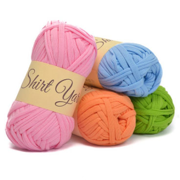

Alat-Alat Merajut
1. Hakpen
Hakpen merupakan peralatan utama dalam merajut. Kalo gak ada hakpen ya bukan merajut namanya. Hakpen pertama yang saya miliki waktu itu bermerk Rose. Merk Rose ini sangat terkenal di kalangan perajut pemula. Kaerena harganya yang relatif murah. Supaya kalau bosen merajut tidak akan rugi kalau beli hakpen itu. Di awal memang sebagian orang memilih aktifitas merajut hanya untuk coba-coba saja. Soalnya kalau lihat orang lain merajut kelihatan mudah sih, padahal juga enggak, hahaha. Harga hakpen Rose berkisar antara Rp 2.000 - Rp 5.000, cukup murah bukan? Bahkan saya sering menjumpai hargtanya gak lebih dari Rp 3.000.
Hakpen kedua yang saya beli adalah yang bermerk Tulip. Tulip ini lebih bagus daripada Rose. Harganyapun bisa sampai 10 kali lipat, yaitu Rp 18.000 sampai Rp 25.000. Ini cukup mahal untuk pemula memang. Tapi hakpen ini lebih ringan, merajutpun juga jadi lebih cepat. Hakpen yang saya beli waktu itu berukuran 5/6. Suka banget sama hakpen ini, warnanya keemasan. Untuk hakpen ini biasanya beda ukuran beda juga warnanya, jadi perhatikan baik-baik sebelum membeli. Jangan asal milih warna tapi ukurannya salah.
<

2. Benang
Benang yang paling mudah digunakan oleh pemula adalah benang katun. katunnya pun juga bukan sembarang katun, katunnya harus yang policherry (lupa tulisannya gimana... hihihi). Mengapa harus katun policherry? karena benang katun ini cocok dibentuk menjadi tas, dompet, maupun boneka. Tekstur dari benang ini lembut tapi kuat. Dan warnanya pun bagus-bagus. suka banget deh sama benang katun policherry ini. Harga benang ini sekitar Rp 11.000 - Rp 15.000. Satu benang biasanya bisa dijadikan sampai 5 dompet hp ukuran standar. Kalo ingin membuat tas dengan ukuran besar, biasanya menghabiskan sekitar 4 - 6 buah benang gulung, Ada juga benang nilon yang cocok digunakan untuk merajut tas, tapi teksturnya lebih keras dan licin.

3. Jarum Knitting
Apa bedanya jarum knitting dengan jarum biasa? Jarum sulam biasanya bentuknya lebih besar (tapi tidak terlalu besar). Ujungnya lebih tumpul, lubang benangnya lebih besar dan berwarna keemasan. Jarum sulam biasanya digunakan untuk menyatukan rajutan satu dengan rajutan yang lainnya. Atau untuk menyembunyikan benang sisa pada rajutan.
<

Sumber : http://ratnaeduca.blogspot.com/2016/07/alat-merajut-untuk-pemula.html